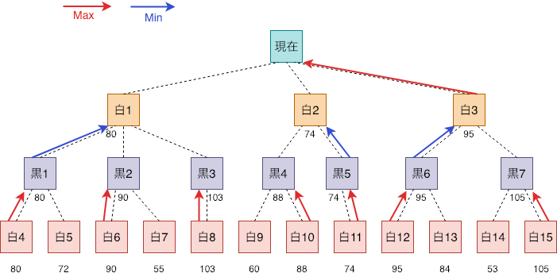
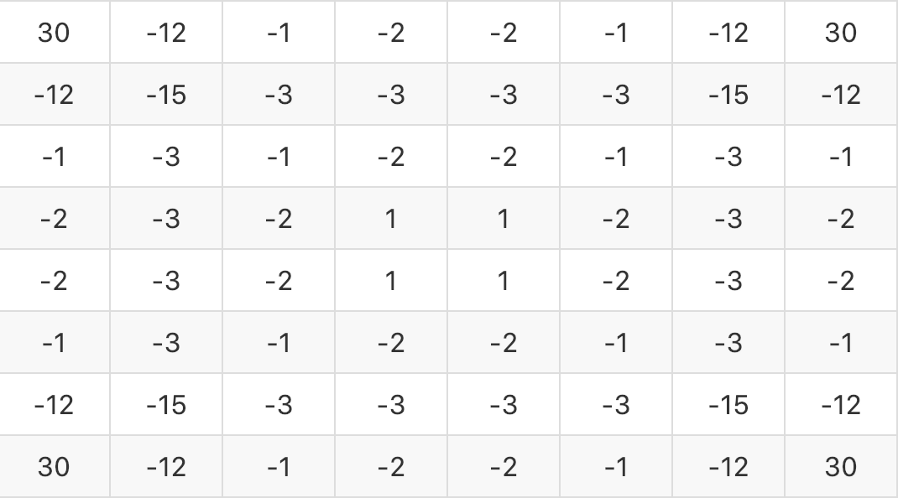
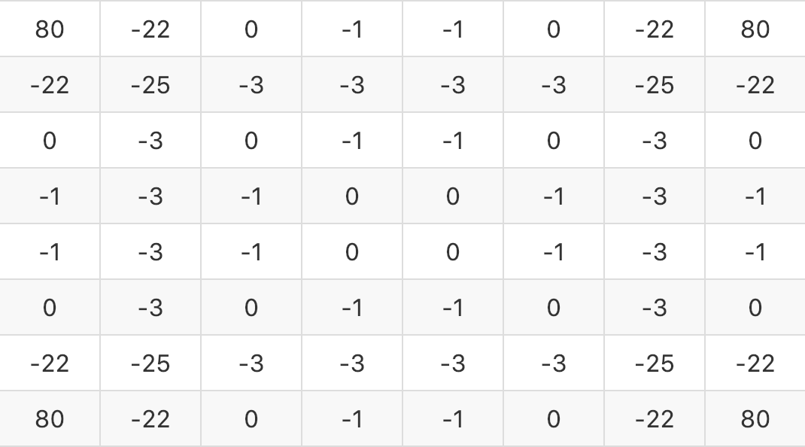
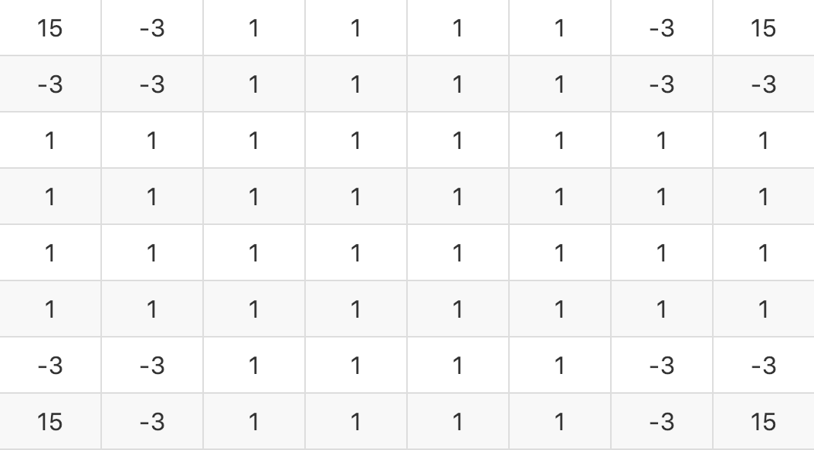

|
White: MiniMax algorithm Black: YOU |
|---|
MiniMax法を実装したオセロのAI.
ユーザが黒を打つと、2秒後にAIが白を打つ.

MiniMax法というのは「完全情報零和ゲーム」に適している.
「自分にとっての最善手は、相手にとっての最悪手」と言った考えに基づいており、
自分は評価値がMaxとなる手を選択し、相手は評価値がMinとなる手を選択すると仮定して先読みを行う.
今回、MiniMax法の深さは3としたので上の図のような流れで白は次に打つ手を決めている.
序盤・中盤・終盤で戦術を変えた.
各局面の評価値をscoreとおく.
score = (自分の点数) - (相手が打てる数)*1.0
ポイント

score = (自分の点数) - (相手が打てる数)*0.5
ポイント

score = (自分の点数) - (相手の点数) - (相手が打てる数)*0.3
ポイント
